Press
The press kit
Everything needed to cover The Lede: the facts, a description written to be quoted, what keeps the rename honest, and clean assets. Short on time? The zip at the bottom has every asset, the facts, and this description.
Writing about The Lede? Email charles@theledeapp.com. One person answers it, usually within a day. Quotes, a different crop, a real answer to a hard question: ask.
The facts
- App
- The Lede, listed on the App Store as "The Lede: Read Later"
- Developer
- Charles Klein LLC
- Platform
- iPhone and iPad, iOS 26 or later
- Categories
- News (primary), Productivity
- Price
- Free to start: ten briefs and two Dig Deepers a month, no account. Membership is $9.99 a month or $99.99 a year, each with a 7-day free trial and 150 Dig Deepers a month; subscriptions auto-renew until cancelled.
- Availability
- United States App Store
- Release date
- To be announced · this page carries the date and the store link on release day.
- App Store link
- Live on release day
- Press contact
- charles@theledeapp.com
- Website
- theledeapp.com
What The Lede is
This section is written to be quoted. Use it verbatim or cut it down.
The Lede is a read-later app for iPhone and iPad with a research desk behind it. Headlines are written to be clicked; The Lede reads the article underneath and tells you what it actually argues.
Save anything worth reading, from Safari or any app with a share button. It comes back renamed for the real story, filed on its beat, with a short brief that makes the strongest honest case the piece can make. Your queue reads like a magazine instead of a pile of open tabs. You're the editor. The Lede is your research desk.
When something matters, Dig Deeper sends the desk out on it. It finds more reporting, weighs what holds up, including the strongest case against the piece, and comes back with an honest bottom line. Then it shows you every source it looked at, so you can check its work.
It's built to be read: real typography, a dark mode made for reading at night, and VoiceOver support throughout. The Lede is designed and tested against WCAG 2.2 AA, and every screen was walked with VoiceOver on a real iPhone before it shipped.
The receipt
The rename is the feature most likely to raise an eyebrow, so here is what keeps it honest. The desk renames every article by what it actually argues, and the original headline is preserved right beside the rename, labeled RAN AS, exactly as it ran. The full article is kept on the reader's own device and stays readable, quotes stay verbatim, and every link opens the source. Nothing is swapped behind the reader's back; they never have to take the desk's word for anything.
We're not summarizing, we're clarifying: making the point of the article crystal clear so you can decide whether a piece is worth your time at all.
The demonstration that leads the App Store listing: "A glass of red wine equals an hour at the gym" comes back as "It was run on rats."
Who made it, and why it charges
Charles Klein is a designer. He built The Lede because he got tired of headlines that bury the story, or sell one that isn't there, and because the read-later app he wanted didn't exist: one that reads what you save instead of storing it. It's native SwiftUI, built with Claude Code and finished by hand.
Why a subscription: every brief and every Dig Deeper is real compute, spent on one reader's one article. There are no ads, no trackers, and nothing is sold; the membership pays for the desk. The free tier is real: ten briefs a month with no account and no card, and two Dig Deepers a month are free so anyone can try the desk at full stretch.
Where it sits
Readwise Reader, Matter, GoodLinks, and Folio are the established read-later apps, and they are good at what they do: they store and reformat what you save, and some of them will answer questions about a piece once you have it open. The Lede reads every article on the way in, unasked, and renames it in the queue by what it argues, so the work happens before you open anything. That is the whole difference, and it cuts both ways: if what you want is a beautifully formatted archive, those apps have years of head start. If you want to know what a piece actually argues before you give it twenty minutes, that is what The Lede is for. On iPad it is a real iPad app, not a stretched-out iPhone layout.
Privacy, in plain terms
Every sentence here matches the Privacy Policy, which carries the binding detail.
- The app has no account: no name, no email, no password. A reader's library lives in their own iCloud, not on our servers.
- The app hosts no web view of its own and owns no cookie store, so a capture cannot leak a reader's signed-in session off the device.
- Sharing from Safari, the normal path, reads only the page the reader already had open, as they see it. A link shared from another app is fetched and read by the desk itself.
- Article text is sent to our AI provider to write the brief and is never used to train AI models.
- A Dig Deeper's notification is pushed only to the device that asked for it.
- No ads, no third-party trackers, nothing sold.
Assets
Download the press kit (zip, 5.5 MB)
The iPhone frames are the six on the App Store listing, in listing order, 1320 by 2868. The iPad frames are the listing's five. Everything here is free to reproduce in coverage of The Lede, so far as the rights are ours to grant; please don't recolor or re-draw the icon.
iPhone frames
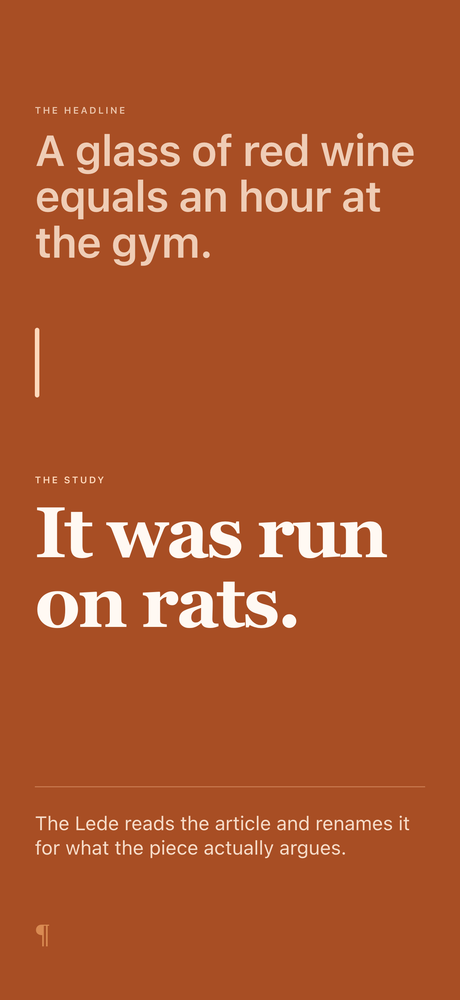
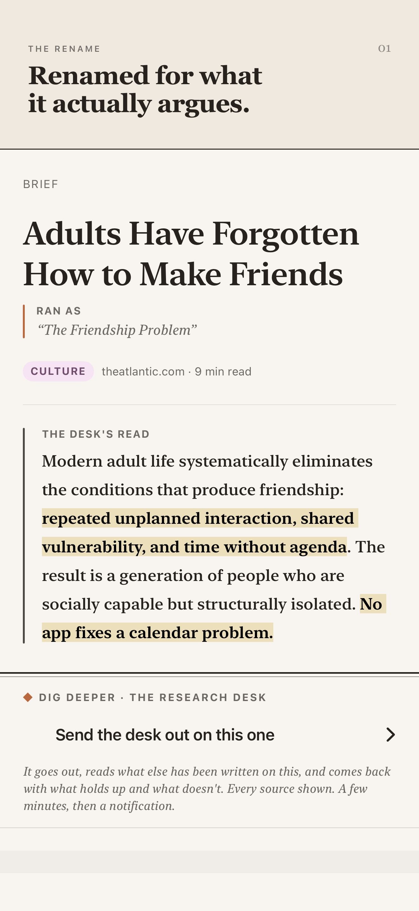
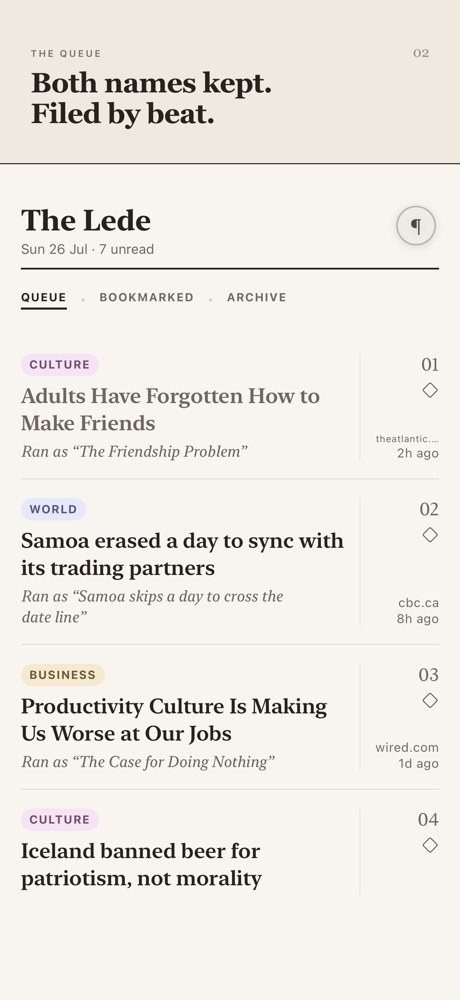
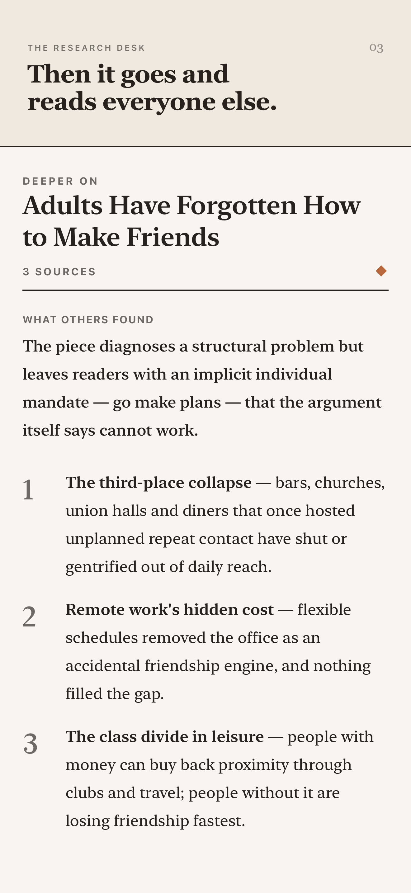
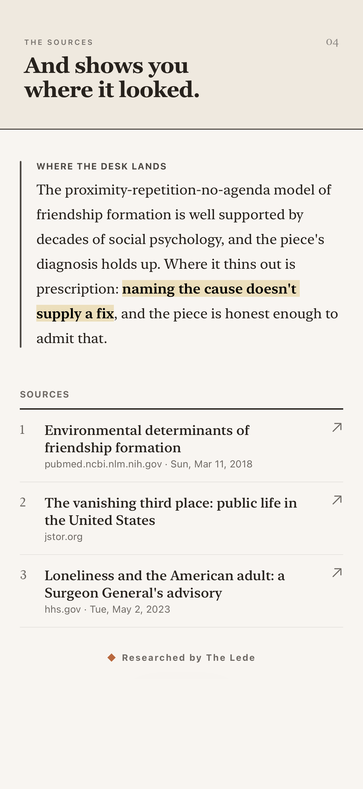
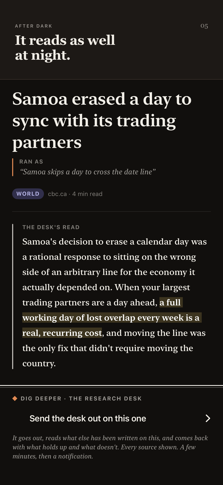
iPad frames
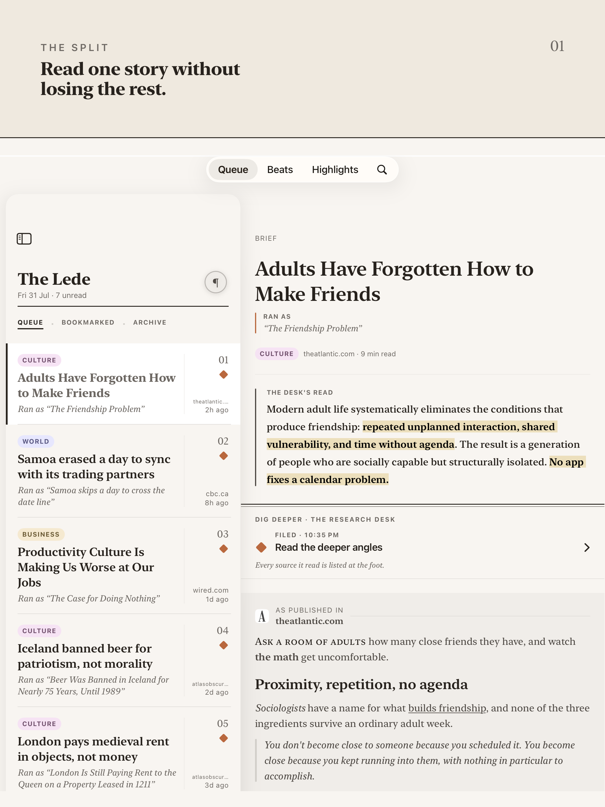
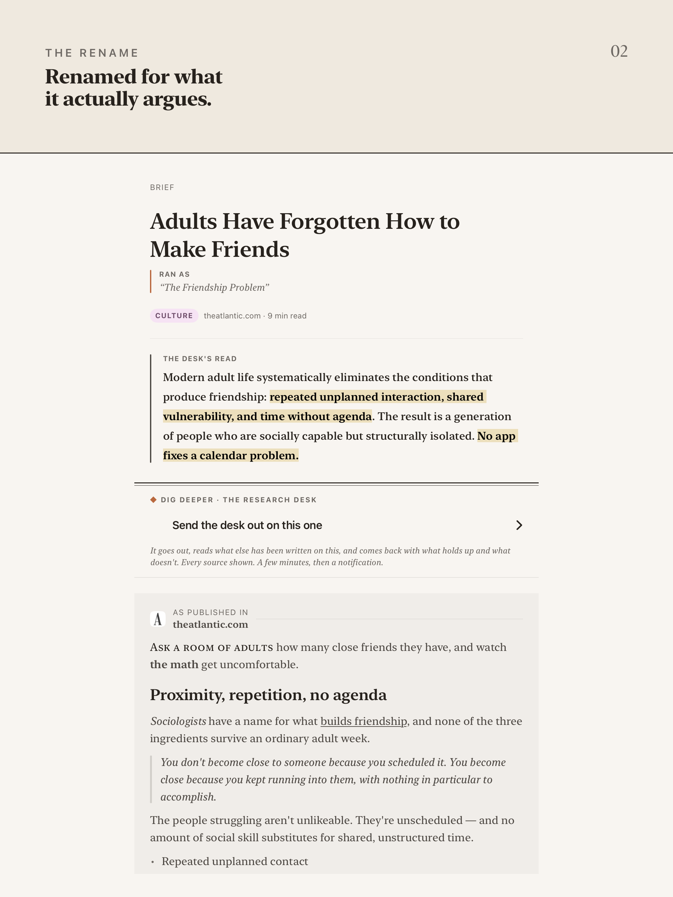
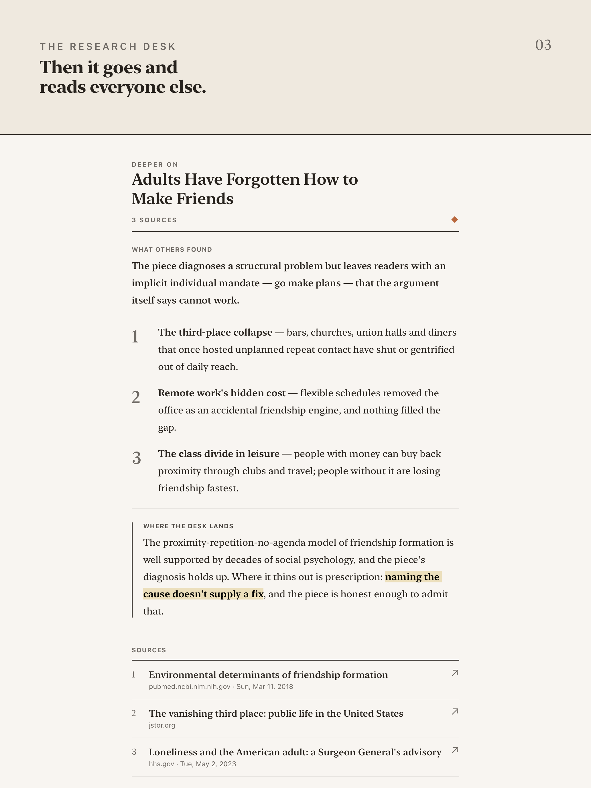
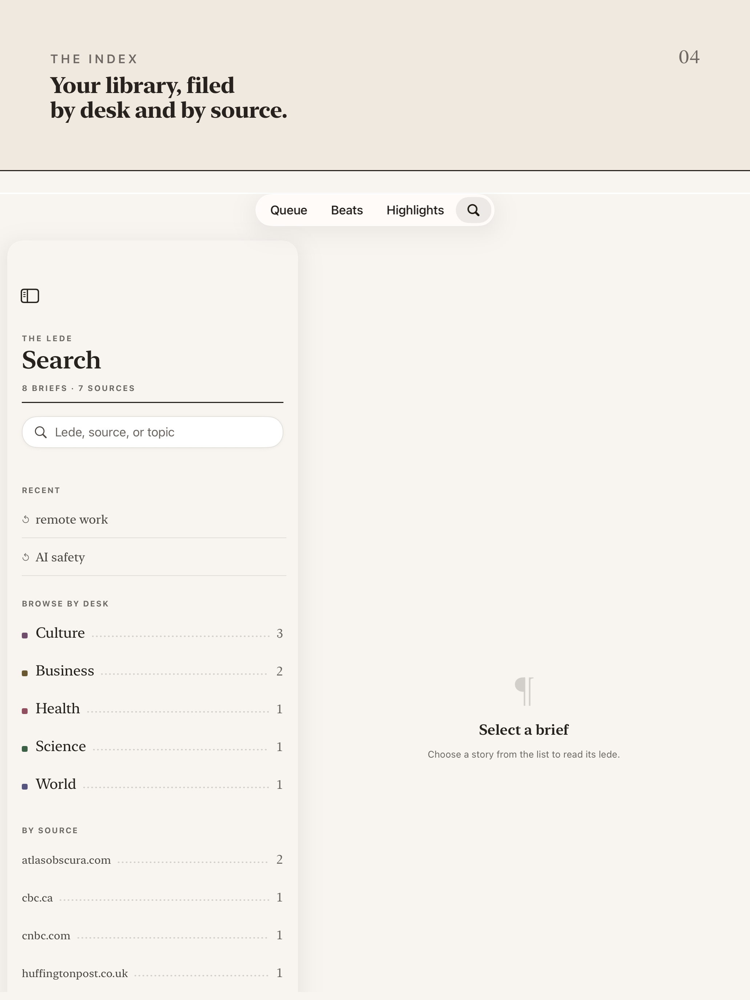
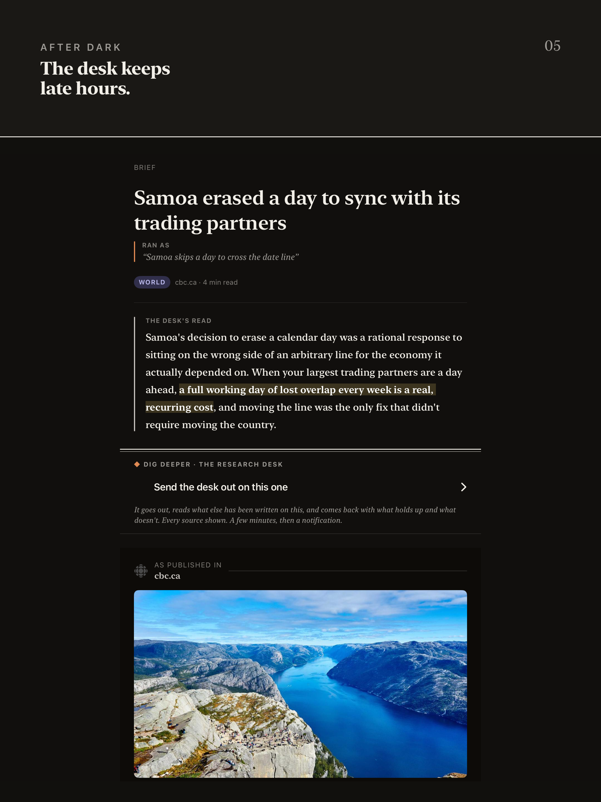
Icon & card
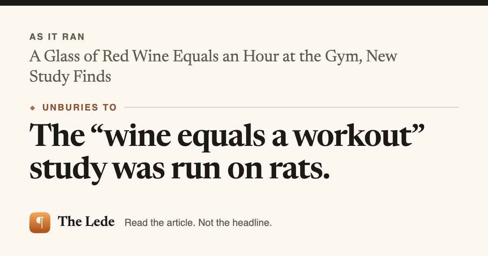